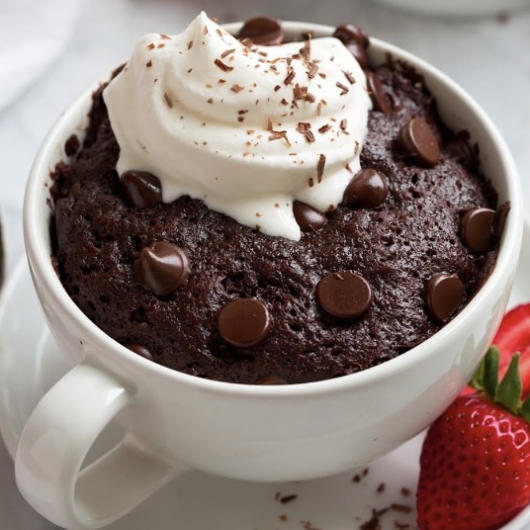

Brownie en taza
Ingredientes:
- 2 cdas de hojuelas de avena
- 1 pieza de huevo
- ¼ tza de leche vaca o vegetal
- 2 cditas de cacao en polvo
- 3 sobres de endulzante
- 1 cda de chispas de chocolate
Instrucciones:
- Mezcla todos los ingredientes en la licuadora o procesadora de alimentos (excepto las chispas de
chocolate)
- Vierte en una taza apta para microondas y calienta por 2-3 minutos
- Retira, deja enfriar y agrega las chispas de chocolate por encima